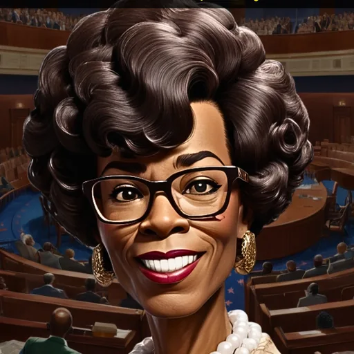

Shirley Chisholm
Shirley Chisholm was the first Black woman elected to the U.S. Congress and sought a major-party presidential nomination in 1972. She advocated education, economic opportunity, and political inclusion.
Begin the lesson ↓
Essential Question & Objectives
What challenges can a pioneering candidate reveal about political institutions?
Students will identify historical context, investigate a claim, evaluate interpretations, consider missing perspectives, and produce a supported argument with an explicit limitation.
Teacher Guide · Pacing & Accessibility
Discover 5 min · The World 8 min · Stories & Evidence 10 min · Decisions 8 min · Apply 10 min · Demonstrate 9 min. Use the shared sticky timer. Permit accessible reading, spoken reflection and partner discussion.
Teacher preparation: Editorial draft derived from the Hall collection. Independently verify chronology, historical specifics and citations before classroom assignment.
Independent Learner Guide
Use the six navigation buttons, complete the formative and final checks, choose a decision pathway, and save your reflection locally in the browser. Multi-select questions require every correct choice.
Beyond the Portrait
Imagine you are responsible for introducing Shirley Chisholm in a historical museum. Your label must be both engaging and truthful. What can this brief historical account establish, and what would need further verification?
Shirley Chisholm was the first Black woman elected to the U.S. Congress and sought a major-party presidential nomination in 1972. She advocated education, economic opportunity, and political inclusion.
What is a biography's role in historical inquiry?
Time, Place and Context
Hall historical grouping: A World in Transition. Recorded period: 1924–2005. Hall region: United States / Black Atlantic.
Shirley Chisholm was the first Black woman elected to the U.S. Congress and sought a major-party presidential nomination in 1972. She advocated education, economic opportunity, and political inclusion.
Historical placement helps establish the world in which this person acted, but the labels alone do not explain motivations or prove every biographical detail. Consider the institutions, communities and events affecting this person's choices.
What the Sources Tell Us
Why this figure matters: Examine representation and the barriers facing women in electoral politics.
The Hall profile is an educational secondary account, not direct testimony. To evaluate the biography, locate the original document or a credible scholarly source connected to the specific contribution. Ask when it was produced, whose voice it represents and what it leaves out.
Choose Your Research Direction
The museum has funding for one additional investigation into Shirley Chisholm. Which course will most strengthen the exhibit's accuracy?
Explain which choice better addresses the essential question and how the evidence could alter your conclusion.
Create an Evidence-Based Exhibit
Performance task: Create a three-part diagram explaining a social institution, an obstacle, and an outcome mentioned in the biography.
Your response must refer to Shirley Chisholm, use two details from the lesson, and identify at least one claim requiring outside verification. Do not treat imagined speech or decorative artwork as documentary evidence.
Check Your Historical Reasoning
Read all five questions, choose two answers where instructed, review explanations and calculate your score.
Which Hall account best identifies Shirley Chisholm?
What is the most responsible first step when evaluating a biography?
Select TWO sound techniques for researching historical claims.
Which interpretation handles uncertainty responsibly?
Which exhibit label best meets historical inquiry standards?
Research Beyond the Summary
Use an evidence organizer with two columns: the Hall's claims and the sources needed to corroborate them. Revise your original interpretation to name one new uncertainty or perspective.
Historical Sources and Research Status
This draft uses the Examine the Past Hall biography and the existing Hall artwork. The portrait is an illustration. Individual sources, dates, interpretations and rights must be verified for classroom use.
- Examine the Past — Hall of Legends (biography and image)
EDITORIAL DRAFT — figure-specific source verification remains outstanding.